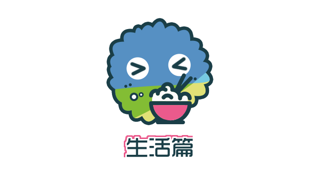

新生同志问题指南 | 生活篇


▼
新生同志问题指南
原作者：烟玉暖阳 kiokio
修订人：Owen 烟玉暖阳 丸子 琉璃 Anna
排版：abcxyz 青雀 Dale 文文 Ray
统筹：雨林
鸣谢：皮皮 卡乐

▎如何交友/找到社群？
初入新校园的你，可能会因自己性少数的身份而倍感焦虑和孤独，渴望能在同类人的支持、友谊和爱情中找到真实的自己；或者你已经是一个小司机，熟练在各类交友app中勾搭并期待大学里更精彩的线下生活；甚至，你可能是一个惧怕认识同类人，希望自己身份永远不要暴露给任何人的深柜中人，却仍然具有对性、爱情、社交的自然渴望。
那么，社群或者交友的意义对你来说便是重要的。
根据科学统计，LGBTQ等性少数人群在人口中占有的比例并非很低，在偌大的校园或城市中，你总能找到能伴你同行的性少数伙伴，乃至给你归属感的组织与社群。
互联网时代的你，找到与你同类的人并不是一件难事。首先，你所在的城市、学校或学区（大学城）等，或多或少有着性少数群体社团或组织，以及你所处学校的QQ群、微信群等，但是很可能它们隐秘在信息潮流中如性少数群体般难以发现，你需要的则是动用新时代必需的搜商、微博/微信使用技术，和“老司机带带我”的精神。其次，一、二线城市也有专门的同性恋主题酒吧，提供交流的机会。同时越来越多的社群机构和组织也开始组织线下的聚会，借此交流经验，相互帮助同时更好的认同自己。最后，随着智能手机的飞速发展，目前已出现许多面向同性交友的手机APP，如面向男同交友的Blued等，面向女同交友的热拉、LESDO等。这些“小软件”往往具有非常丰富的功能，可以根据你所在的定位显示出你周边使用该软件的同伴，帮助你快速发掘与你同样的人。
然而，不论你采取何种交友方式，也不管是与性少数还是直人交友，你都需要切记：在交友的同时注意保护自身生命、财产和健康安全。具体的提示，请详见后文的“安全篇”部分。牢记，性少数也是这个社会的组成部分，也会有这个社会的善恶美丑。
• 酷儿论坛参与彩虹马拉松

Q：途径这么多，我先找哪个？
A：建议各位首先找到同志群体组织，这些社群/组织有各种各样关于情感、性爱、同志权益等方面的知识分享，也会有丰富的线下活动，不妨试着去了解、参与和融入。无论你是否喜欢社交，有几个能够交心的同志朋友多少是对你生活的方方面面有所助益的。相比于在网络中孤立地同单个陌生人个体交流，线下活动更有助于你了解性少数群体，可以为你在现实中结识更多志同道合的朋友提供良好的平台，也会给你更实在、充实的参与感。
Q：同志圈好乱哦，我要进去吗，还是要出来呢？
A：一种普遍存在于刚刚接触这个群体的不良心态是：觉得同志圈很乱很脏，我应该避而远之，觉得自己从来不接触性少数群体就很“干净”很“靠谱”。
但事实上，“性别认同”、“性/恋向”只是一个人的诸多特征中的一个，这个特征并不能决定一个人是“脏”还是“干净”，我们并不能把自我不认同推之到整个群体，更不能因为别人的性向去判定ta的人格，否则你要别人如何判定你？这个群体是由多元而复杂的个体组成的，而你完全具有决定被哪种社群亚文化影响的主体性。
更不用说，这些“脏”、“乱”的道德评价本身就是被压抑和污名的性文化的产物，个体的性自由选择本身也不应该成为评价ta人格的标准，乃至被推广到对社群的评价中。
Q：我在三/四线城市和偏远地区怎么办？作为跨性别、无性恋等更加少数的群体，我怎么找到社群呢？
A：中国性少数公益的发展仍然还存在着地区和群体的差异，上述的很多线下资源主要集中在大城市和性少数中的“主流”群体比如男同中。所幸的是，互联网的发展带来了资源的普及，对于跨性别、无性恋等少数中的少数而言，获得对生存和自我认同至关重要的信息资源可能远比交友重要，而这些资源在贴吧、相关公众号、豆瓣、知乎上都能够找到；对于三/四线城市的同志而言，可能会更依赖交友APP进行个体间交友，或是其他传统形式如QQ的线上交流。
• 北京同志中心跨性别热线

• 跨性别生活
▎遇到歧视/霸凌怎么办？
首先恭喜你，能够意识到歧视/霸凌代表着你已经拥有了基本的权利意识——这并不是一件容易的事，大多数人包括少数群体自身都可能将现实合理化，甚至用社会达尔文化的语言阻止对歧视的异议表达。歧视包含两个因素，一是人的某个缺陷、缺点、能力、出身以不平等的态度或眼光对待；二是造成了实质意义上的不利影响。当只包含前者时，它可能是一种偏见或者刻板印象，这是我们希望去努力倡导消除的；而包含了后者即事实上的行为时，它成为一种歧视，这是我们绝不能接受的。然而我国还没有专门的反歧视法律，当你遇到那些对你不友善的人、受到显性或者隐性的伤害或者不公平的对待时，只能以人身安全为最高前提，在尽可能的保护自己的人身安全和自己的隐私维护自己的权益；必要时，可以求助社群里不少组织和机构，它们面对歧视都有各自应对的方法（包括信息公开、利用一般人格权进行法律诉讼等），也可以向那些支持自己的人求助。

• 面对教科书的污名与歧视内容，秋白选择了行政诉讼
▎消除内部歧视
不止是有非性少数在歧视性少数人群，性少数人群内部也有歧视。同性恋看不起双性恋，嫌他们两倒、“花心”，或者努力撇清与跨性别“死人妖”的关系；阳刚的男同看不起阴柔的男同，嫌他们“不是男人”；性方式“常规”的看不起SM 族群，嫌他们“重口味”；不出来活动的同志看不起活动频繁的同志，嫌他们“乱”……长得胖、动作娘、穿着土、年纪大、学历低、相貌平平、爱好特殊、感染疾病等等，都可能成为某些人对其他人进行道德评判的理由，“胖子勿扰”、“娘炮滚开”等等似乎已经成同志征友的必备台词。当这个群体内部就已经歧视不断，还如何去向群体之外呼吁“反歧视”？

我们不可否认，某些人对某些事物存在着“偏好/厌恶”，不管这种情绪是与身俱来的，还是习得的。一个平等自由的社会意味着，每个人都有权利表达自己的观点、决定自己的行动，只要你没有伤害到他人，就不应该被干涉。我们不能强迫反同者都微笑着来一张“同志，你好！”，不可能以“每一个性少数都应该是反歧视先锋”道德审判而要求所有的同志都对边缘同志敞开怀抱，但在表达这种偏好时请注意场合和方式。“良言一句三冬暧，恶语一句三伏寒。”“恶心”“变态”和“不喜欢”是完全不同的表达效果，在私人或公共场合表达说也有是不同的影响。将个人好恶上升为道德评判标准，对自己所不喜欢的大加鄙夷、区别对待，这将造成对另一个群体的伤害。“已所不欲，勿施于人。”请思考这样的问题：如果不想别人歧视你，那么你是否能做到不歧视别人？
当然，我们也更欢迎对这些歧视的进一步思考，包括它背后所隐含的性别气质二元刻板印象、身体羞辱、荡妇污名和性压抑文化等。也许大家没有办法成为学术派性别理论家，但是一颗包容的心和更大的想象力，是面对这个世界的更好方式。

▎我们以后的生活怎么办
人们对于性少数群体的认知是不断变化的，就像同性婚姻也经历了从无到有，从少到多；性别重置手术、身份证性别更换乃至性别友好厕所也逐渐被接受和实行。
在我国，对性少数人群的权益的争取才刚刚起步，它的推动需要大家的努力，相信有一天你能过上你向往的生活。
在职场友好环境、同志生育/婚姻。跨性别医学支持、同志养老领域，国内都已经有了相应的组织机构在为此努力。
爱情并不是一个人生活的全部，我们需要感情，也需要独立于世的能力，这些都是构成我们一生密不可分的整体，因此没有必要去把自己的性别认同、性取向与自我割裂开来，接纳自己，勇敢做自己，当爱情来到的时候勇敢抓住，当爱情还没来的时候，就努力让自己变得更优秀。
• 酷儿论坛 2018 年骄傲月涂鸦活动
▎遇到心理问题怎么办？
根据同语的一项调查显示，由于不足够友好的校园环境，在校性少数学生的可能会有更低的心理健康水平，包括焦虑和负面情绪等。在出现这些问题时，你可以选择进行心理咨询或心理治疗。
一般的心理治疗（诊断）大多在医院精神科/心理卫生科进行，以诊断心理疾病及药物治疗为主。而心理咨询大多在专业的心理咨询机构，由持证的心理咨询师进行。整个咨询过程中需要遵守严格的咨询原则，如保密原则，中立原则（不做主观价值评价）等，注重对求助者个人能力的肯定与引导，不直接提供咨询师的个人意见。心理咨询不是权威指导，不是“沙皇”式的治疗，而是求助者与咨询师共同的心理成长过程，可以提高求助者个人的忍耐力，觉察力及发现自我认识自我的能力。
由于我国心理咨询及精神卫生领域发展和监管的问题，对多元性别的认知不足，行业内还存在性倾向扭转治疗等不合法的诊疗手段。实际上，两个运用最广泛的精神疾病诊断分类方案DSM-4和ICD-10都不再将同性恋本身包括在精神疾病分类中。如果你在咨询过程中遇到不友好、试图违背你意愿对你的性向进行干预/扭转的咨询师或医生，请及时终止咨询或诊疗，请记住：一切关于性向的治疗都是骗局。
一些组织机构（如北京同志中心）已经开展了同志友善心理咨询师的项目，你可以通过他们以及一些本地的组织获取友善心理咨询师的联系方式。

由于指南的篇幅较长，阅读体验可能不太好。今年的推送，我们将尝试分期发送。并在后面几期中附上其他篇的链接。希望大家继续关注。下期预告：